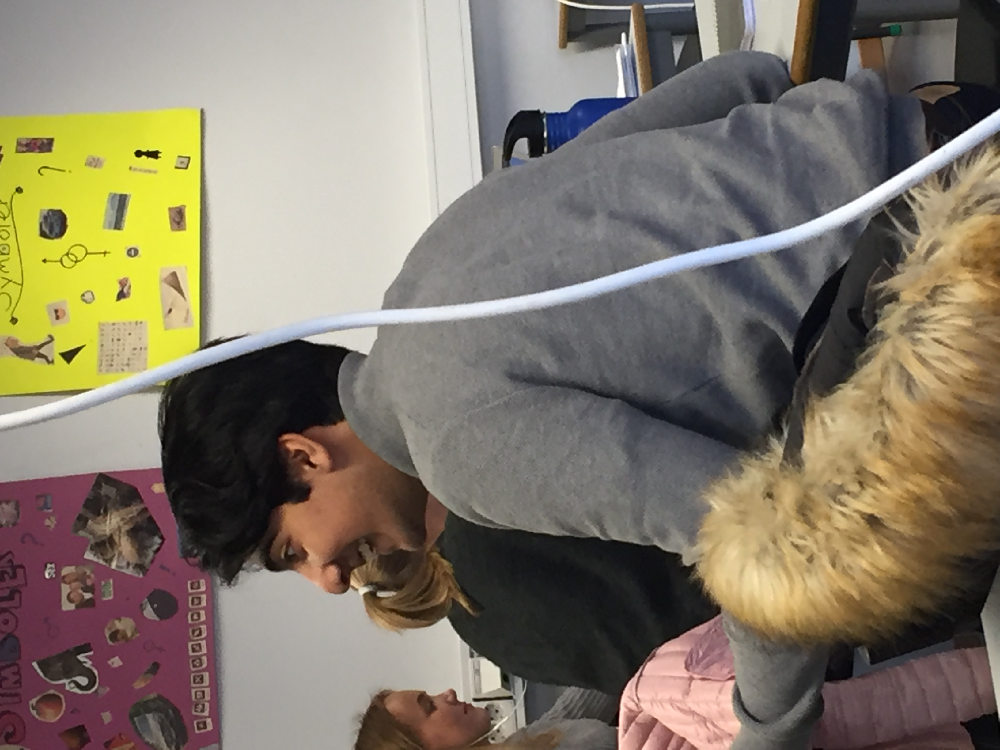

Thomas Sjøstedt er en unnasluntrer
Thomas sjøstedt blir tatt i å slurve og "skippe" arbeid på skolen når han skal jobbe med IT. Dette er bekymringsverdig etter som Thomas allerede er ganske dårlig i IT.
Værvarsel
Sola skinner over Sandvika VGS på en kald høstdag.
Elevene jobber hardt med IT
Selvom noen tar seg tid til å spille spill i timen, er det fortsatt mange elever som jobber hardt.
Fargefull skole

Sandvika VGS er åpen for alle og aksepterer minoriteter med åpne armer. Her er alle glade.
Ødelagte prosjektorer
Ødelagte prosjektorer fører til tapt undervisningstid på skolen, noe som er veldig frustrerende for både elever og lærere. Har ikke skolen midlene til å erstatte ødelagt utstyr?
Ødelagte vannautomater
Mange ødelagte vannautomater fører til at det blir store køer og omveier for å fylle vann for elvene. Noen velger da å ikke fylle vann som fører til at elver går tørste gjennom skoledagen.